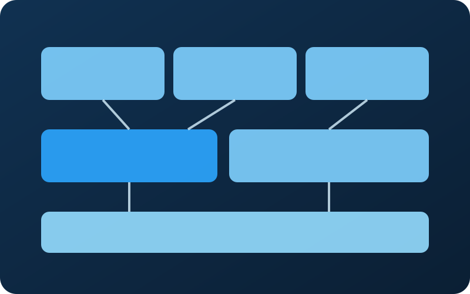
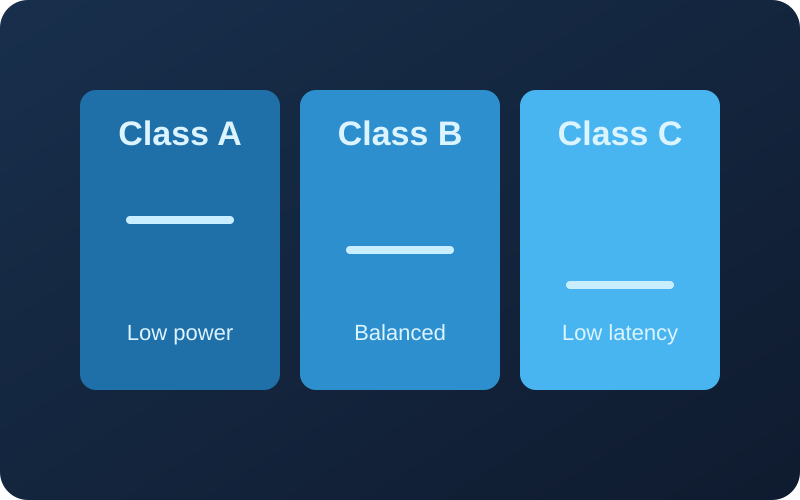
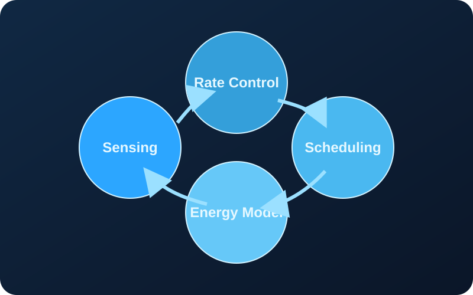

Projects
Projects
My projects investigate simulation methods and develop mechanisms for low-power wide-area networks. You can find all public repositories on my global GitHub profile: github.com/sanoufrancois226-crypto.

